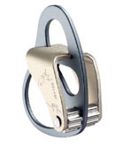
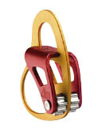

发信人: coneypo (coneypo), 信区: outdoor
标 题: 【转载】攀岩中保护器的分类及特点
发信站: 饮水思源 (2015年12月02日08:12:53 星期三)
原网页( http://www.8264.com/viewnews-24875-page-1.html)
目前我们经常见到的保护器主要有三类，即8字环类、ATC类、机械制动类。
一．8字环类保护器
8字环类保护器是攀登者发明的第一代保护器。它的特点是结构简单，操作方法简便。
它对绳索直径的要求为：大于等于8mm且小于等于13mm。绳索的适用范围相对比较大，所以
8字环的应用范围非常广泛，可用于登山、攀岩、溪降、救援、工程等方面。
不同厂家生产的8字环在外型上也有所差别，如下图所示，最原始的是正圆形8字环，
由于在使用中，正圆形容易使绳索扭曲缠绕，所以为了弥补缺憾，有些厂家对 8字环的形
状进行了相应的改进。例如：法国PETZL公司生产的Huit和Huit Antibrulure ，Huit的四
方形状设计，可避免绳子卷曲缠绕而难以操作；Huit Antibrulure上有一个小把手，当绳
索摩擦使其发烫时，捏住小把手可防止手被烫伤。
另外，由于8字环的制动性能不是很灵敏，所以PETZL公司还研发生产了具有多个制停
位置的Pirana ，在用于下降使用中，其制动性能得到了改善。
screen.width - 200){this.width = screen.width - 200}">
图1，正圆8字环
screen.width - 200){this.width = screen.width - 200}">
图2，Huit
screen.width - 200){this.width = screen.width - 200}">
图3，Huit Antibrulure
screen.width - 200){this.width = screen.width - 200}">
图4，Pirana
8字环类保护器的优点是：厚实耐磨，对于较硬的绳索也能很好的配合。缺点是：略显
得笨重些，且与其它保护器相比制动锁定性能略差一些。适合于快速保护操作及快速下降
时使用。
二．ATC类保护器
ATC类保护器在使用时，送绳和收绳都非常流畅，绳索不容易产生卷曲缠绕，操作方法
简单，可用于单绳或双绳，且制动性优于8字环类保护器，所以深受攀登者的喜欢。如今各
式各样的ATC类保护器令郎满目。且不同厂家的产品，其使用功能也略有区别，所以使用前
一定要认真查看产品说明书。
目前国内常见的ATC类保护器有：ATC，ATC XP，ATC guide，REVERSO，REVERSINO等。
如下图所示。
screen.width - 200){this.width = screen.width - 200}">
图5，ATC
screen.width - 200){this.width = screen.width - 200}">
图6，ATC XP
screen.width - 200){this.width = screen.width - 200}">
图7，ATC guide
其中，ATC是Black Diamond公司生产的最早的ATC类保护器，适用的绳索直径为8.5 m
m至11mm。ATC XP是ATC的改进版，可通过改变绳索方向来改变制动端的摩擦力，适合8.1
mm至11mm直径的绳索。 ATC guide的性能类似于REVERSO，是一款具有自我制停功能的保护
器，通过改变绳索方向可以适合于7.7mm至11mm的绳索。
 screen.width - 200){this.width = screen.width - 200}">
图8，REVERSO
 screen.width - 200){this.width = screen.width - 200}">
图9，REVERSINO
REVERSO及REVERSINO是由PETZL公司生产的，该保护器在 ATC 的基础上进行了大量的
改进。除了基本保护工作方式外，它最主要的是增加了自我制停工作模式，当攀登者坠落
时，利用攀登者对绳索的拉力来压住REVERSO上绳索的自由端，起到制动的作用。还可以通
过改变穿绳方向或主锁配合方式来改变摩擦力，以便于控制。REVERSO适用的绳索直径为8
mm至11mm ，REVERSINO适用的绳索直径为7.5mm至8.2mm 。
由于ATC类保护器的制动性能优于8字环类保护器，所以被广泛的应用于攀岩、攀冰保
护。
三．机械制动类保护器
GRIGRI 是由PETZL公司生产的一款具有机械制动结构的保护器，如下图所示。它用于
单绳的攀登保护和下降，其适用的绳索直径为10mm至11mm。它最大的优点是具有自动制停
系统，它的设计完全从安全性出发，很大程度的提高了操作的安全性。
screen.width - 200){this.width = screen.width - 200}">
图10，GRIGRI
与8字环类和ATC类保护器相比，机械制动保护器的操作略复杂一些。对绳索的安装方
向有严格的要求，分为攀登端和制动端。当攀登端突然被拉紧时，凸轮会迅速转动并卡住
绳索而制停。关于绳索的收放操作也有一定的要求，在保护操作时，制动端的绳索始终都
要用手握住，严禁松开。下降时的速度，是通过操作扳把儿和握住制动端绳索的手共同控
制。
专用下降器及特点
攀登保护器除了保护以外也能用于下降。除此之外，还有一类专门用于下降的下降器
，这类下降器只针对于下降使用，一般不用于攀登保护。由于只针对于下降，所以这类下
降器的下降及锁定功能比较优越。
我们常见的专用下降器主要有：STOP，SIMPLE，以及RACK等，如下图所示。

图11，STOP
STOP用于单绳下降使用，具有操作把手，当放开把手时，自动制停系统即会运作。适
当握住把手，并拉住绳尾，便可控制下降速度。STOP要求绳索直径在9mm至12mm之间。
screen.width - 200){this.width = screen.width - 200}">
图12，SIMPLE
SIMPLE用于单绳下降，用手拉住绳尾便可控制下降速度，在狭窄的沟壑里使用最适合
。SIMPLE要求绳索直径在9mm至12mm之间。
screen.width - 200){this.width = screen.width - 200}">
图13，RACK
RACK可用于单绳或双绳下降，能根据绳索及重荷的情况来调节速度。摩擦力平均，有
利于保护绳索，下降时绳索不会产生缠绕。RACK用于单绳时要求绳索直径在9mm至13mm之间
，双绳时要求绳索直径在8mm至11mm之间。
上升器的种类及特点
上升器主要用于沿绳索上升或提拉重物时使用，上升器根据用途不同可分为：手柄上
升器，胸式上升器，脚踏式上升器，以及多用途上升器。下面介绍几款PETZL公司生产的上
升器产品。
screen.width - 200){this.width = screen.width - 200}">
图14，ASCENSION
手柄上升器ASCENSION，适用于8mm至13mm固定单绳攀爬。符合人体工程学的设计，用
单手即可安装于绳上，为手部提供最佳的把手，同时使手腕与拉扯的方向成一直线。弹力
橡胶手柄使抓握更舒适。镀铬钢轮有倾斜的齿爪，可抓紧湿滑、冰雪或泥泞的绳索。手柄
上升器还分为左手型和右手型。
screen.width - 200){this.width = screen.width - 200}">
图15，CROLL
胸式上升器CROLL，适用于8mm至13mm的单绳攀爬。可与手柄上升器配合使用。

图16，PANTIN
脚踏上升器PANTIN与CROLL和ASCENSION上升器同时使用时，可使绳索攀爬变得更容易
。使用脚踏在攀爬时保持身体直立，使攀爬更快捷及不那么容易疲倦。脚带有自动上锁扣
，容易调节。PANTIN不是保护设备只用于协助攀绳，用于右脚，适用于8mm至13mm直径的单
绳。
screen.width - 200){this.width = screen.width - 200}">
图17，TIBLOC
小型上升器TIBLOC，体积小巧，便于携带，适用于8mm至11mm单绳。可以用于滑轮系统
、绳索攀登等。用10或12毫米圆形或椭圆形横切面的上锁安全扣配合使用。
screen.width - 200){this.width = screen.width - 200}">
图18，MICROCENDER
上升器MICROCENDER，适用于9mm至13mm单绳。用作自我保护、滑轮系统、或拖拉重物
。向上移动时易于滑动，而向下则易于制停。
screen.width - 200){this.width = screen.width - 200}">
图19，SHUNT
上升保护器SHUNT，适用于单绳10mm至11mm或双绳8mm至11mm。可用于绳索攀登或作为
自动制停绳结（抓结）的机械替代装置，可安装在下降器的下方，作为附助设备使用，下
降时一旦松手，即会制停。
--
※ 来源:·饮水思源 bbs.sjtu.edu.cn·[FROM: 10.184.182.74]
|